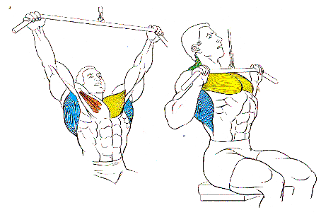
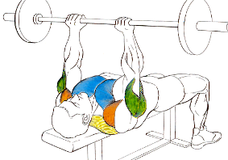
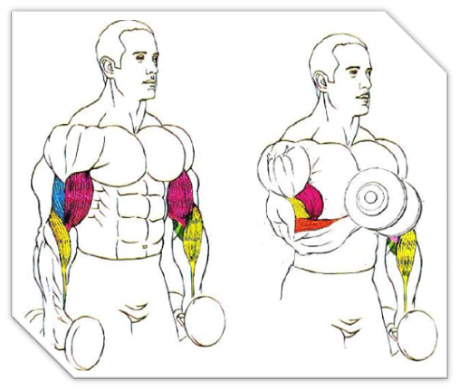

|
Agárrate en pronación a una Barra de Dominadas con las manos a la distancia de los hombros, asegurándote de tener los brazos totalmente rectos y de que los pies no toquen el suelo. Esta es la posición inicial. |
|  |
sentado, agárrete a la barra en donde la posicion de las manos sea simetrica, empieza a bajar hasta la altura de los hombros, en turnos por delante de la cabeza y por detras hasta completar doce repeticiones. |
|  |
se desarrolla apoyando la espalda totalmente en un banco, es necesario que elevemos los pies y los apoyemos en el banco o los mantengamos encogidos durante el desarrollo del ejercicio. Lo mismo que la cabeza que debe permanecer recta y mirando al frente para evitar doblar el cuello y poder dañar la zona cervical. agarra la barra con una apertura superior al ancho de nuestros hombros, los brazos permanecerán fijos en la misma posición subiendo y bajando el peso |
|  |
Coge un par de mancuernas y agarralas a los lados del cuerpo con las palmas hacia arriba con los pulgares alrededor de las asas para mayor seguridad. Mantén los ojos hacia delante, el pecho erguido y las rodillas ligeramente dobladas.
Mantén los codos clavados a los lados y simultáneamente eleva las mancuernas hacia ambos hombros como si quisieras hacer un Curl de Martillo. |